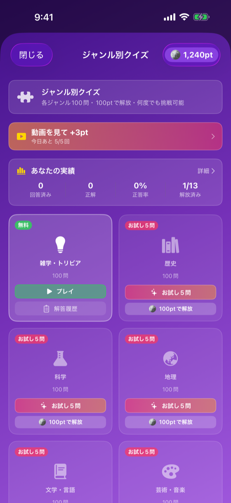

14ジャンルから興味のあるものをコイン購入で解放（雑学・トリビアは無料）

14のジャンルから興味のあるものを解放し、ジャンル別クイズで集中学習する画面。 「雑学・トリビア」は完全無料（cost: 0）、その他13ジャンルは最初の5問が無料お試し、全問解放は 100コイン。
| 要素 | 種類 | 説明 |
|---|---|---|
| 上部の説明 | Text | 1.0.13: 「雑学・トリビアは無料。ほかのジャンルは5問お試しでき、100ptで100問を解放」 |
| コインバッジ | HStack | 現在のコイン残高 |
| 動画ボーナスボタン | Button | 「動画を見て +3pt」・「広告の動画が流れます・今日あと N/5回」（1日5回まで） |
| ジャンルカード | LazyVGrid | 14ジャンル × （icon, name, バッジ, cost or プレイボタン） |
| ジャンルカードバッジ | Overlay | 「無料」「お試し5問」バッジを色別で表示 |
| 実績サマリー | VStack | 回答数・正解数・正答率・解放済みジャンル数を上部に表示 |
| 進捗ボタン | NavigationLink | GenreProgressView（「詳細 ›」リンク） |
| 履歴ボタン | NavigationLink | GenreQuizHistoryView |
| 状態 | 表示内容 |
|---|---|
| 完全無料ジャンル（雑学・トリビア） | 「無料」バッジ + 「プレイ」ボタン |
| 未アンロック（5問お試し未使用） | ピンク「お試し5問」バッジ + 「お試し5問」ボタン + 「100ptで解放」ボタン |
| 未アンロック（5問お試し使用済み）v1.0.7 | グレー「お試し済み」バッジ + 無効化「お試し済み」ラベル + 「100ptで解放」ボタンのみ操作可 |
| 残高不足（1.0.13） | 解放ボタンは押せるまま「🪙 100ptで解放」の下に「あとXpt」。押すとアラート「あとXptで解放できます」＋貯め方（動画を見て +3pt〔1日5回まで〕・毎日のログイン +1pt・今日のクイズの正解 +1〜3pt） |
| アンロック済 | 「プレイ」ボタン → モード選択 |
| 操作 | 遷移先 |
|---|---|
| 「100コインで解放」 | 確認アラート → コイン消費 → アンロック（不足時は「あとXpt」の案内アラート） |
| 「プレイ」 | モード選択（ランダム/順番/続きから） → GenreQuizPlayView |
| 進捗 | GenreProgressView |
| 履歴 | GenreQuizHistoryView |
GenreDefinition {
let id: String
let name: String
let icon: String // SF Symbol
let cost: Int // 100
}
GenreQuizService {
func unlockGenre(id: String) -> Bool
func isUnlocked(id: String) -> Bool
}cost: 0 で常時アンロック扱いmarkFreeTrialUsed(for:) でフラグ記録）@State playSession: GenrePlaySession? で genre+mode をアトミックに渡し、シート presentation 時の race condition を排除genre_shop_viewed（source）で記録| バージョン | 日付 | 変更内容 |
|---|---|---|
| 1.0 | 2026-05-09 | 初版作成 |
| 1.1 | 2026-05-17 | v1.0.5: 無料体験枠（雑学無料・他5問お試し）、動画ボーナスボタン、実績サマリー、状態バッジを追加 |
| 1.2 | 2026-05-25 | v1.0.7: お試し5問を1ジャンル1回限りに制限（「お試し済み」バッジ追加）。GenrePlaySession 導入で race condition を解消。価格表記「コイン」→「pt」に統一 |
| 1.3 | 2026-09-07 | v1.0.11: 新ジャンル「経済・お金」（economy / yensign.circle.fill / 100pt）追加によりジャンルカードは 14ジャンルに。表示順は末尾（14番目）で、無料枠の「雑学・トリビア」が先頭である構成は変更なし |
| 1.4 | 2026-10-21 | アプリ 1.0.13（未公開・2026-10-21）: ポイント不足でも解放ボタンを押せるようにし「あと何pt・どう貯めるか」を案内、上部の説明に無料ジャンルとお試しを明記、動画ボーナスの文言を「動画を見て +3pt」に、入口別の計測を追加（DT-015・DT-016・DT-010） |